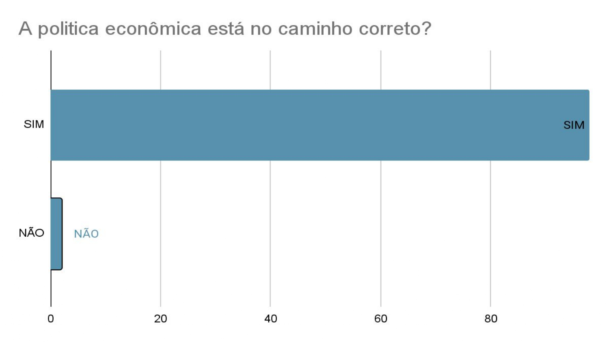
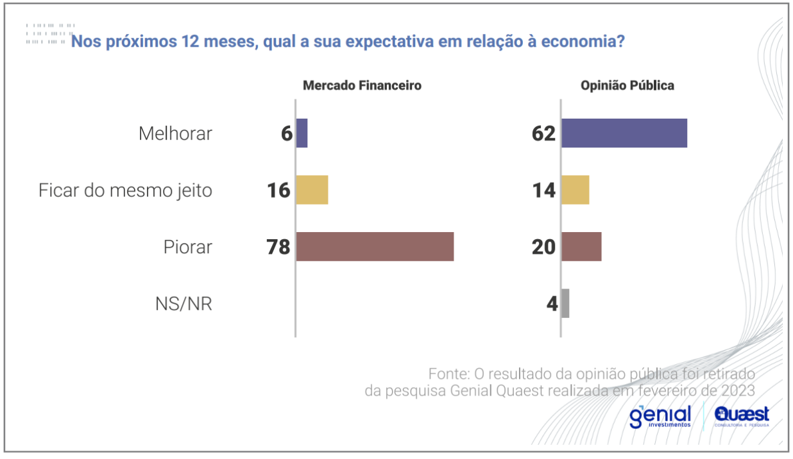
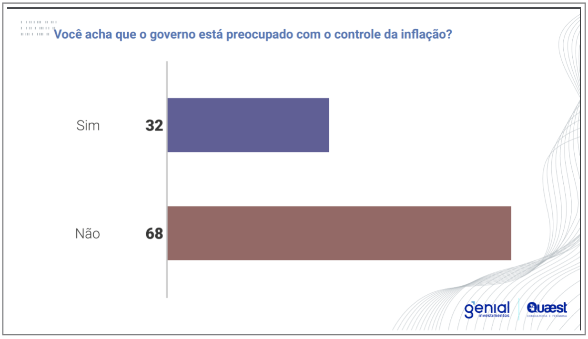

A Genial/Queest entrevistou representantes de 82 fundos de investimento em SP e no Rio. Pessimismo sobre o futuro da economia.

Uma pesquisa da Genial/Queest divulgada nesta quarta-feira (15/03/2023) constatou que 98% dos participantes do mercado financeiro acreditam que as políticas econômicas do governo de Luís Inácio Lula da Silva (PT) estão indo na "direção errada". Apenas 2% concordam com as políticas governamentais.
O pessimismo expresso na pesquisa também obscureceu as expectativas sobre o futuro da economia nos próximos 12 meses. 78% disseram esperar que os indicadores do Brasil piorassem. Outros 16% acreditam que o cenário atual permanecerá inalterado, enquanto 6% acreditam que melhorará.
Entrevistados também questionaram o compromisso do governo com o combate à inflação, com 68 afirmando não considerar a agenda como parte das preocupações do atual mandato. O risco de recessão no Brasil é avaliado como viável por 73%.
Veja a seguir os resultados:



Lula tem sido alvo de polêmica com o presidente do Banco Central, Roberto Campos Neto, desde que assumiu o cargo. As críticas se intensificaram depois que o Copom (Comitê de Política Monetária) decidiu, em 1º de fevereiro, manter a taxa básica de juros Selic em 13,75% ao ano.
A comissão já havia sugerido que os juros deveriam permanecer nos patamares atuais no longo prazo, até o fim do mandato de Campos Neto, em meados de 2024. No entanto, as expectativas de uma revisão em baixa estão aumentando.
A equipe econômica do governo entende que os juros altos atrapalham o crescimento do país e não se justificam como mecanismo de controle da inflação, já que o mercado brasileiro carece de forte demanda de consumo. Os governadores dos bancos centrais não gostavam de confrontos com o poder executivo e buscavam resolver suas diferenças. No entanto, a Cúpula do PT mantém pressão pela renúncia.
Data: 20/03/2023
Autor: Matheus Menezes Scaranello
Categoria: Economia